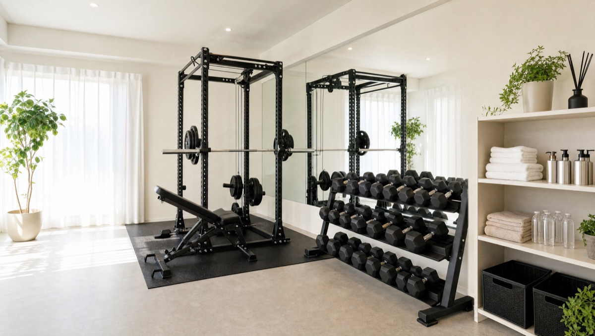
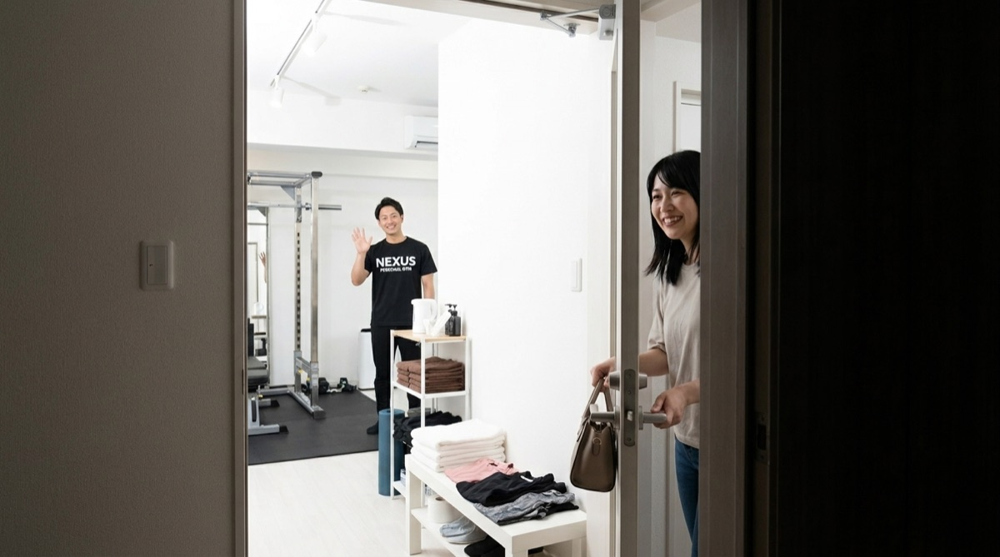
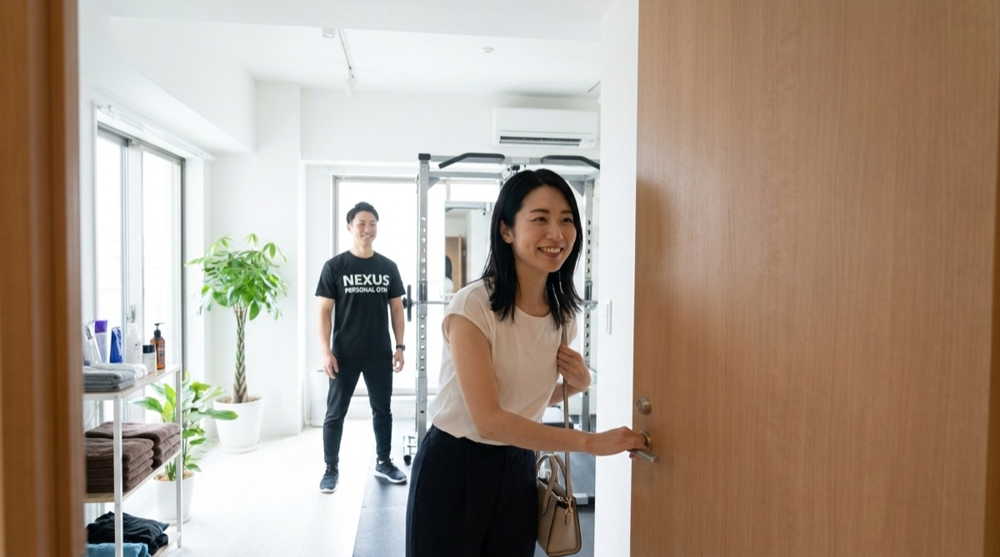
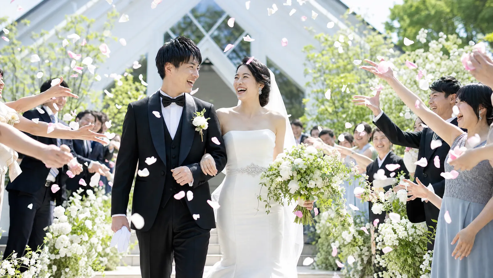

NEXUS Personal Gym ／ 埼玉県さいたま市大宮区
NEXUSパーソナルジム 大宮店｜埼玉県に初上陸した完全個室ジム

さいたま市大宮区仲町、東日本最大級のターミナル・大宮駅の東口から徒歩圏にある完全個室パーソナルジムです。NEXUSにとって、大宮店は埼玉県への初出店。これまで東京都内・神奈川を中心に全国約70店舗を展開してきたNEXUSが、いよいよ埼玉に上陸しました。「都内系列70店で実証済みのメソッドが、ついに埼玉へ」——大宮駅は浦和・上尾・川越方面からのアクセスもよく、地元にはない完全個室ジムに乗り換えなしで通える求心力があります。完全個室で担当トレーナーと二人だけだから、人目を気にせず集中できます。ウェア・タオル・ドリンク・プロテインまで全部込みのアメニティ完備で、手ぶら通いOK。毎日8:00〜23:00・LINE予約で、無理なく続けられます。挙式日から逆算する結婚式前のブライダルボディメイクにも対応。オープン直後ながら、早くもGoogle口コミ★5.0の評価をいただいています。
- ブライダル対応
- 完全個室
- 埼玉県初出店
- 大宮駅東口 徒歩圏
- 都内70店で実証済み
- 手ぶらOK
- Google口コミ★5.0
この店舗の特徴
NEXUS大宮店は、さいたま市大宮区仲町にある完全個室パーソナルジム。東日本最大級のターミナル・大宮駅の東口から徒歩圏という好立地です。この店舗の最大の特徴は、NEXUSにとって「埼玉県への初出店」であること。これまで東京都内・神奈川エリアを中心に全国約70店舗を展開してきたNEXUSが、埼玉の玄関口・大宮に初めて根を下ろした一軒です。「埼玉で完全個室のパーソナルジムを探していた」「都内まで出ずに、地元で本格的な指導を受けたい」——そんな方にこそ通っていただきたい店舗です。埼玉県初の店舗ながら、ご提供するのは都内約70店で実証済みのメソッドそのもの。完全個室のマンツーマンだから、人目を気にせず自分のペースで進められます。予約はLINEでサッと完結。埼玉に上陸したNEXUSで、続けられる身体づくりを始めてみませんか。
東京で実証済みのメソッドを、大宮で

「新しい店舗＝実績が未知数」——そう思われるかもしれません。ですが、大宮店がご提供するのは、まったく新しい方法ではなく、都内・神奈川の系列約70店舗で長く磨かれてきた指導メソッドそのものです。全トレーナーが3ヶ月の厳しい自社教育プログラムを修了してからデビューし、大宮店にも同じ教育を受けたトレーナーが在籍しています。系列店では、月島店が★5.0（172件）、練馬店が★5.0（95件）という、地域で長く支持される高い評価をいただいています（2026年7月時点）。大宮店が埼玉県への初出店にもかかわらず、オープン直後からGoogle口コミ★5.0をいただけているのは、こうしてブランド全体で積み上げてきた指導品質が、そのまま大宮でも共有されているからです。「埼玉だから」と妥協する必要はありません。東京で実証されたクオリティを、乗り換えなしの地元・大宮で受けられます。
オープン直後の、今だけの通いやすさ

パーソナルジム選びで意外と見落とされがちなのが、「予約の取りやすさ」です。人気店では、仕事帰りの夜や休日の日中といった通いやすい時間帯ほど枠が埋まりやすく、「行きたい時間に予約できない」というストレスが続くと、通うこと自体が億劫になってしまいます。大宮店はオープンしたばかり。だからこそ今は、希望の曜日・時間帯をゆとりを持って確保しやすいタイミングです。仕事帰りの夜も、買い物ついでの日中も、あなたの生活リズムに合わせて予約を組めます。毎日8:00〜23:00の営業なので、早朝のひと汗から夜遅めの一本まで幅広く対応。予約・変更はLINEから完結し、6時間前まで無料でキャンセル・変更が可能です。「始めるなら、通いやすい今のうちに」——埼玉に初上陸したNEXUSを、いちばん動きやすいこのタイミングで体感してください。
仕事帰りも、買い物ついでも

ジム通いが続かない理由のひとつに、「準備が面倒」という声がよくあります。運動着やタオルを揃えてバッグに詰め、忘れ物がないか確認して……この“ひと手間”が、忙しい毎日のなかでは意外と大きなハードルになります。大宮店は、その手間をまるごとなくしました。ウェア・水・タオル・プロテインまですべて無料でご用意しているので、通勤バッグや買い物帰りのそのままの姿で、手ぶらで立ち寄れます。大宮は買い物・食事・用事で立ち寄る機会の多い街。「駅に出たついでにトレーニング、終わったらそのまま夕食や買い物へ」と、生活の動線に自然に組み込めます。

大宮駅東口の徒歩圏という立地は、「わざわざ通う」ではなく「ついでに寄る」を可能にします。仕事帰りにひと汗かいてから帰宅する、休日に買い物へ出るついでに身体を動かす——生活のなかにトレーニングを溶け込ませられるからこそ、無理なく習慣として続きます。毎日8:00〜23:00の営業なので、出勤前の朝にも、仕事帰りの夜にも、生活のリズムに合わせて通えます。「手ぶらで、ついでに」——この身軽さが、通い続ける習慣を後押しします。
広域から通える、大宮の求心力
大宮駅は、JR宇都宮線・高崎線・京浜東北線・埼京線・湘南新宿ラインに加え、東武アーバンパークライン、ニューシャトルが乗り入れる東日本最大級のターミナルです。この“求心力”こそ、大宮店の大きな強みです。浦和・上尾・川越・春日部方面にお住まいの方も、乗り換えなし、あるいは一本で大宮までアクセスできます。「地元には完全個室のパーソナルジムがない」「近くの大型ジムは混雑していて集中できない」——そんな方が、生活圏の延長として通える一軒です。買い物や用事で大宮に出るついでに立ち寄れるので、「ジムのためだけに遠出する」という負担がありません。埼玉県内の広いエリアから、乗り換えなしで本格的な完全個室の指導を受けられる。大宮という街の便利さを、そのまま身体づくりの続けやすさに変えられます。まずは無料体験で、大宮まで足を運ぶ価値を確かめてみてください。
Price料金プラン
入会金は通常55,000円、無料体験当日入会で15,000円（税込）に割引。AI食事指導は月額3,000円（税込）。全店舗共通の料金です。
Bridal Body-make結婚式まで、最高の自分をつくる大宮店のブライダルボディメイク
大宮店では、挙式日から逆算した結婚式前のボディメイクに力を入れています。ドレスで視線が集まる背中・二の腕・デコルテ・ウエストを、完全個室のマンツーマンで整えます。会員の約85%が女性。体に不必要に触れないノータッチ指導を基本にしているので、はじめての方も安心してトレーニングに集中できます。悩みから当日、そしてその先まで——挙式に向かう物語に、大宮店が伴走します。



「ドレスの試着で二の腕が気になった」「背中の開いたデザインを、体型を理由に諦めたくない」——挙式という動かせない期日があるからこそ、ボディメイクは最後までやり切れます。大宮店では、まず挙式日とドレスのデザインをうかがい、挙式日から逆算した90日プラン・60日プランで「いつまでに、どの部位を、どこまで」を最初に設計します。残された日数が少なくても、部位を絞って集中的に取り組めば体のラインは十分に変えられます。極端な食事制限で当日フラフラ……ということがないよう、その日のコンディションから逆算する無理のない指導で、式当日にピークを合わせます。目標が数字ではなく“当日の自分の姿”だからこそ、「このデザインで大丈夫かな」から「このドレスを選んでよかった」へと、モチベーションが途切れません。
大宮・浦和エリアで挙式を予定されている方に。式場の多い駅だからこそ、打ち合わせや下見の帰りに、そのまま通えます。浦和・上尾・川越方面からもアクセスがよく、準備で慌ただしい時期でも、生活動線のなかに無理なくトレーニングを組み込めます。
挙式90日前に入会し、週2回のペースで通いました。背中の開いたドレスに合わせて、二の腕と背中を中心にプランを組んでもらい、途中のドレス試着ではっきりサイズダウンを実感。当日は自信を持って写真に写れました。式後もそのまま通っています。
上記はサービス内容をわかりやすく伝えるためのモデルケース（イメージ）であり、実在するお客様の口コミではありません。Google口コミは本ページ内の該当セクションに実際の内容を要約して掲載しています。
そして、挙式はゴールではなく新しい生活のスタートでもあります。せっかく作り上げた身体を、そのまま新生活の習慣に。大宮店は毎日8:00〜23:00営業・月4回18,000円（1回4,500円〜）から続けられるので、挙式後の体型維持から、産後のボディメイクまで、人生の節目に長く伴走します。全国約70店舗のネットワークがあるため、引っ越しや里帰りの際も最寄り店舗へ。「一生に一度」のために始めた習慣が、その後の人生を支える土台になります。
挙式日からの逆算タイムライン｜ブライダル専用ページを見るReviewsお客様の声
出典：Google マップ
NEXUS大宮店は埼玉県初のNEXUS店舗。全国約70店舗で実証された完全個室×手ぶらOKのパーソナルジムが大宮に上陸しました。オープン直後から「体験の丁寧なカウンセリングで、無理のないスタートが切れた」といった声をいただき、Google口コミは★5.0。埼玉に初上陸したNEXUSとして、これからも地元・大宮で口コミを重ねてまいります。
NEXUSは全国約70店舗・会員継続率96%。都内系列の月島店が★5.0（172件）、練馬店が★5.0（95件）の評価をいただいており、ブランドとしての指導品質は各店で共有されています。
体験のときから、こちらの目標や不安をとても丁寧にカウンセリングしてもらえました。運動が久しぶりで不安でしたが、いきなり追い込むのではなく、今できるところから無理のないスタートを切らせてもらえて安心しました。埼玉で完全個室のジムを探していたので、大宮にできて嬉しいです。
アクセス
- 店舗名
- NEXUSパーソナルジム 大宮店
- 住所
- 〒330-0845
埼玉県さいたま市大宮区仲町1丁目48-2 あひか第2ビル402 - 最寄り駅
- JR・東武・ニューシャトル 大宮駅（東口 徒歩圏）
- 営業時間
- 毎日 8:00〜23:00
- 電話番号
- 050-1790-8499
大宮店のよくある質問
Q大宮に完全個室のパーソナルジムはありますか？+
Q埼玉に他のNEXUS店舗はありますか？+
Q浦和・川越方面からも通えますか？+
Q結婚式まで2ヶ月しかなくても間に合いますか？+
Qドレスから見える背中・二の腕を集中的に引き締められますか？+
Qパートナーと2人で通えますか？+
よくある質問（全店共通）
料金・制度などNEXUS全店に共通するご質問です。さらに詳しくは110問のFAQをご覧ください。
Q料金はいくらですか？+
Q手ぶらで通えますか？+
Qキャンセルはいつまでできますか？+
Q食事指導はありますか？+
Qトレーナーはどんな人ですか？+
Q女性会員は多いですか？+
Q体験の流れは？+
NEXUSパーソナルジムの特徴・料金をもっと見る